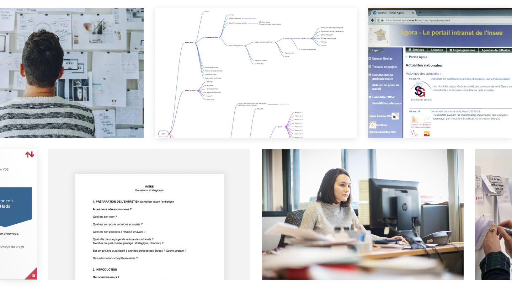
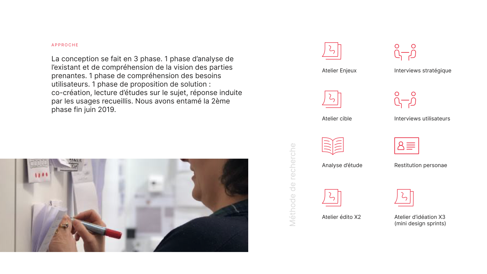
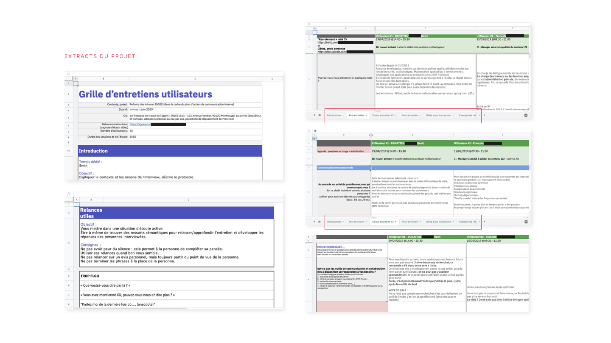

Stakeholders
1 workshop and 5 interviews to collect strategic vision, project challenges and risks.

Gathering strategic challenges and professional practices to support the design of a new digital platform.
As part of the redesign of its intranets and internal communication tools, INSEE requested support to design a digital platform using a user-centered approach.
Working with a strategic planner, we collected project challenges and risks through one workshop and 5 stakeholder interviews. Research into practices across different roles was also conducted through 42 user interviews.
Client question. Bring stakeholder strategic vision together with the real practices and needs of INSEE staff, while adapting UX methodology to an administrative environment.
Constraints. Access to staff in an administrative environment was complex to organize: a wide range of professional roles with frequent internal rotation and limited availability. Reconciling a top-down strategic vision with field practices that sometimes diverged significantly ; without letting either invalidate the other.
The programme combined strategic requirements gathering with user research focused on real practices and professional roles.
1 workshop and 5 interviews to collect strategic vision, project challenges and risks.
42 user interviews to collect real practices and needs across different professional roles.
Feedback was intended to be reconciled with stakeholder perspectives.
The PDF documents a first phase analyzing the existing situation and understanding stakeholder vision, a second phase understanding user needs, and a solution-proposal phase based on co-creation, related studies and collected practices. The second phase had begun in late June 2019.
Challenges workshop and strategic interviews.
Target workshop and user interviews.
Desk research analysis and persona restitution.
Two editorial workshops documented in the method.
Three ideation workshops run as mini design sprints.


Guides adapted first to stakeholders and then to users.
A restitution explicitly listed in the project's research method.
Challenges, target, editorial and ideation workshops documented in the dossier.
Staff practices and top-down expectations had to be made compatible without letting either perspective invalidate the other.
The selected solution was adjusted based on strategic recommendations drawn from user research.
The project also helped consolidate La Netscouade's user research offer: workshop formats, editorial strategy and adaptation of existing formats.
This project taught me to adapt a UX methodology to an environment where it was not yet the norm, and to treat the documentation of that process as a deliverable in its own right. The real challenge was not the research itself: it was making the findings usable for teams who had never worked this way.
Recueillir les enjeux stratégiques et les usages métiers pour accompagner la conception d'une nouvelle plateforme digitale.
Dans le cadre de la refonte des intranets et des outils de communication interne, l'INSEE a sollicité un accompagnement pour concevoir une plateforme digitale selon une approche centrée utilisateurs.
Avec un planneur stratégique, nous avons recueilli les enjeux et risques du projet à travers un atelier et 5 interviews de parties prenantes. Un recueil des usages des différents métiers a également été mené au moyen de 42 interviews utilisateurs.
Problématique client. Faire converger la vision stratégique des parties prenantes avec les usages et besoins réels des agents INSEE, tout en adaptant la méthodologie UX au milieu administratif.
Contraintes. Accès aux agents en milieu administratif complexe à organiser : grand panel de métiers avec rotation interne fréquente, disponibilités limitées. Réconcilier une vision stratégique portée par la hiérarchie avec des usages terrain parfois très éloignés ; sans que les uns invalident les autres.
Le dispositif associait le recueil des besoins stratégiques à une recherche utilisateur orientée usages et métiers.
1 atelier et 5 interviews pour recueillir la vision stratégique, les enjeux et les risques du projet.
42 interviews utilisateurs pour recueillir les usages et besoins réels des différents métiers.
Les retours devaient être conciliés avec les visions portées par les parties prenantes.
Le PDF documente une première phase d'analyse de l'existant et de compréhension de la vision des parties prenantes, une deuxième phase de compréhension des besoins utilisateurs, puis une phase de proposition de solution fondée sur la co-création, les études et les usages recueillis. La deuxième phase avait été entamée fin juin 2019.
Atelier enjeux et interviews stratégiques.
Atelier cible et interviews utilisateurs.
Analyse d'étude et restitution de personae.
Deux ateliers édito documentés dans la méthode.
Trois ateliers d'idéation sous forme de mini design sprints.
Des guides adaptés aux parties prenantes puis aux utilisateurs.
Une restitution citée dans la méthode de recherche du projet.
Ateliers enjeux, cible, édito et idéation documentés dans le dossier.
Les usages des agents et la vision portée par la hiérarchie devaient être rendus compatibles sans que l'un invalide l'autre.
La solution retenue a été ajustée à partir des recommandations stratégiques issues de la recherche utilisateur.
Le projet a aussi servi à consolider l'offre user research de La Netscouade : formats d'ateliers, stratégie éditoriale et adaptation de formats existants.
Ce projet m'a appris à adapter une méthode UX à un environnement où elle n'est pas encore la norme, et à documenter ce processus comme un livrable à part entière. Le vrai défi n'était pas la recherche elle-même : c'était de rendre les résultats utilisables par des équipes qui n'avaient jamais travaillé de cette façon.